Rundt om koden
Konfiguration, udviklingsflow, værktøjer, deployment, miljøvariabler og teknisk opsætning.
Hvordan hænger løsningen sammen?Web App-forbedringer og teknisk fundament
RACE
Konfiguration, udviklingsflow, værktøjer, deployment, miljøvariabler og teknisk opsætning.
Hvordan hænger løsningen sammen?JavaScript til React, syntaks, functions, arrays, objects, async/await og kodemønstre.
Hvordan skriver og læser vi koden?Vi ser stadig kode i dag — men som del af et flow, ikke som syntakstræning.
Videoen er også en kodeeditor.
Stop forklaringen, ændr koden direkte i browseren og se resultatet med det samme.
Vælg gratis kurser. Møder du en betalingsprompt, kan du vælge Skip og fortsætte videoen.
Find gratis kurser ↗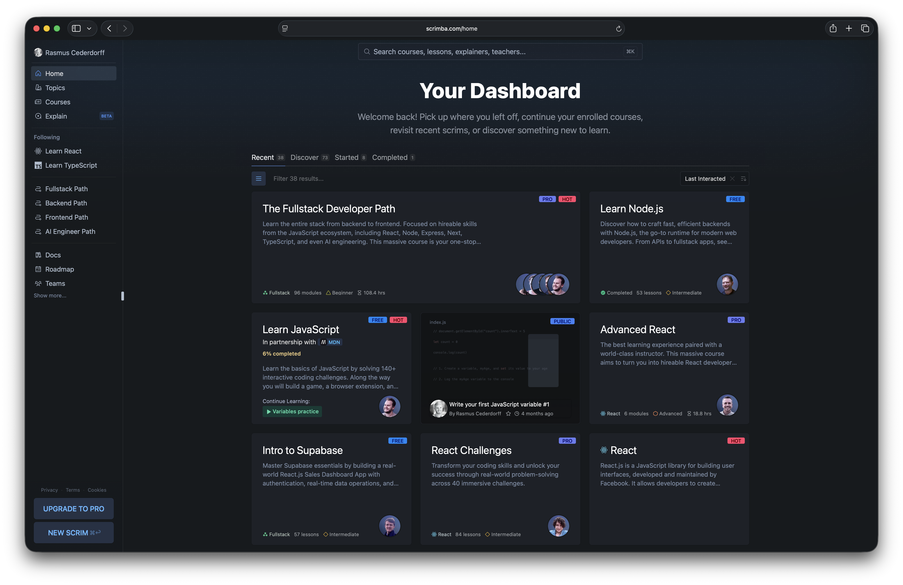
Dev setup, moderne JavaScript, fetch og de første React-komponenter.
Props, state, hooks, routing, data fetching, styling og accessibility.
Git, branches, pull requests, samarbejde og deployment til GitHub Pages.
Supabase, HTTP, REST, forms, CRUD samt filtrering og sortering.
Hvert nyt emne byggede videre på det forrige — frem mod en samlet webapp.
JavaScript, arrays og fetch
Komponenter, props og state
Router, parametre og API-data
Styling, semantik og a11y
Supabase, forms og CRUD
Filter, sort, Git og deployment
På ét semester gik I fra basal JavaScript til en webapp med komponenter, routing, database og deployment.
Hvad vil du gerne have genopfrisket, forklaret bedre eller prøve igen?
Koden kan være korrekt — og appen kan stadig fejle.
Routing, data, konfiguration og deployment skal også hænge sammen.
I har allerede arbejdet med alle fire lag.
Start fra cederdorff/react-router-supabase.
Navngiv det web-app-optimization, og vælg Public.
Clone dit nye repository til computeren. Åbn derefter projektmappen i VS Code.
Kør npm install i projektmappen.
Det installerer de dependencies, projektet har brug for lokalt.
Kør npm run dev. Test forsiden, navigationen og en direkte route.
Helt okay lige nu: /posts viser måske ikke data — det løser vi, når vi
arbejder med miljøvariabler.
Du er klar, når: Appen kører lokalt, og du kan bruge navigationen og åbne en direkte route.
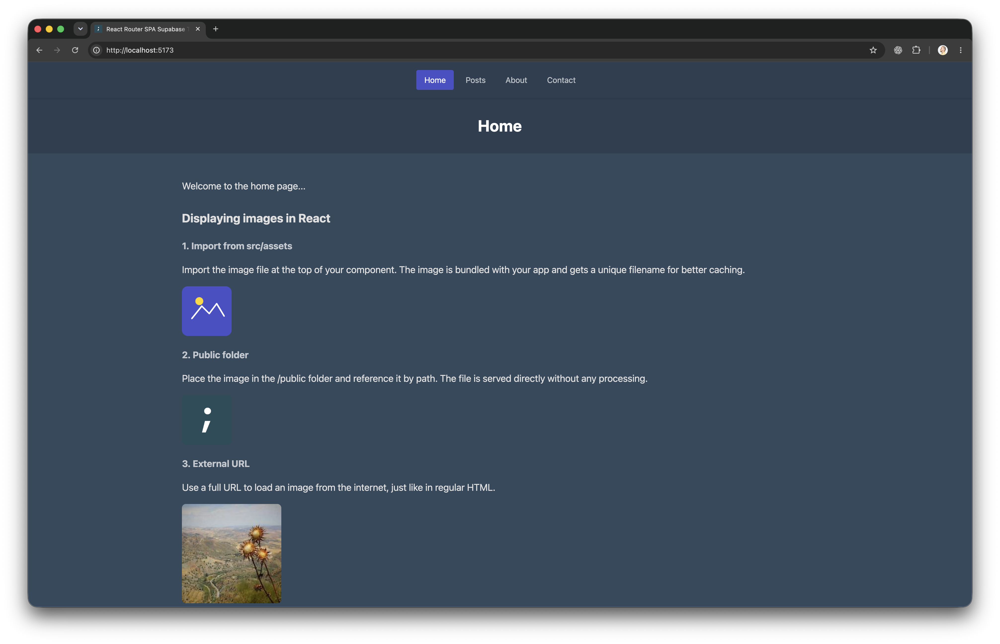
npm run dev starter appen, og du kan navigere mellem de almindelige sider.
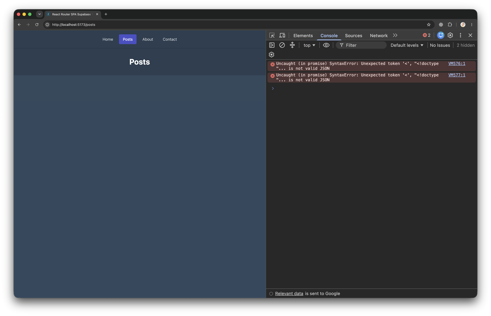
/posts mangler endnu forbindelsen til Supabase. Lad fejlen stå indtil videre.
Når forsiden virker lokalt, er du klar til at følge projektet videre gennem Git og GitHub.
Vi følger én ændring fra VS Code til GitHub Pages.
Redigér og kontrollér appen i VS Code.
Gem ændringen som et navngivet snapshot.
Send dit commit til GitHub.
Et workflow reagerer på push til main.
GitHub installerer, bygger og publicerer.
Kontrollér resultatet på den offentlige URL.
En ændret fil er endnu ikke en commit. Først læser vi diffet og vælger, hvad der skal med.
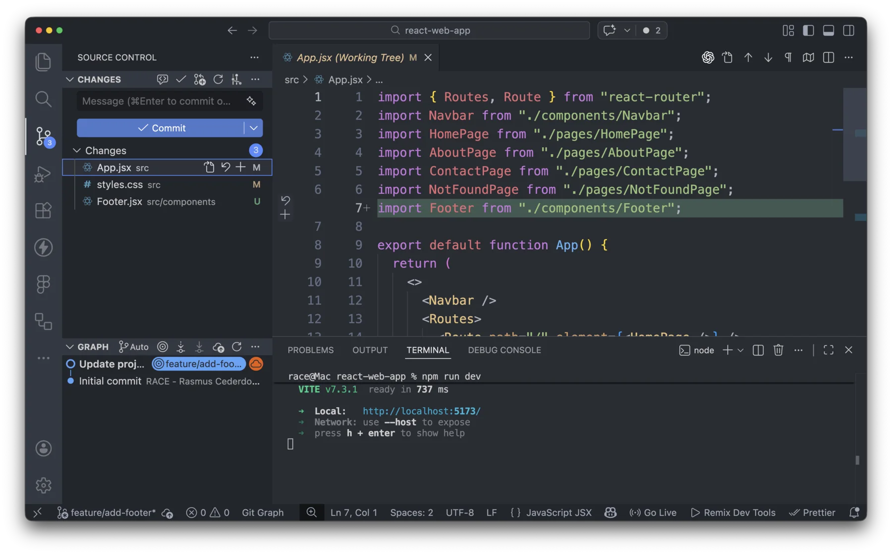
Vælg filer eller linjer til næste snapshot.
git add …Gem snapshot og forklar formålet kort.
git commit -m "…"Send dine lokale commits til remote-repoet.
git pushEn god commit fortæller én sammenhængende historie.
Ændringen findes i din lokale Git-historik.
Commit’et bliver sendt til repositoryet på GitHub.
GitHub Actions registrerer push og starter deployment.
Senere udvider vi flowet: branch → pull request → review → main.
Et push til main udløser workflowet.
GitHub henter koden og installerer projektet.
Workflowet bygger den version, der skal online.
Det færdige build bliver publiceret på Pages.
GitHub Actions kører workflow-filen på GitHub — ikke på din computer.
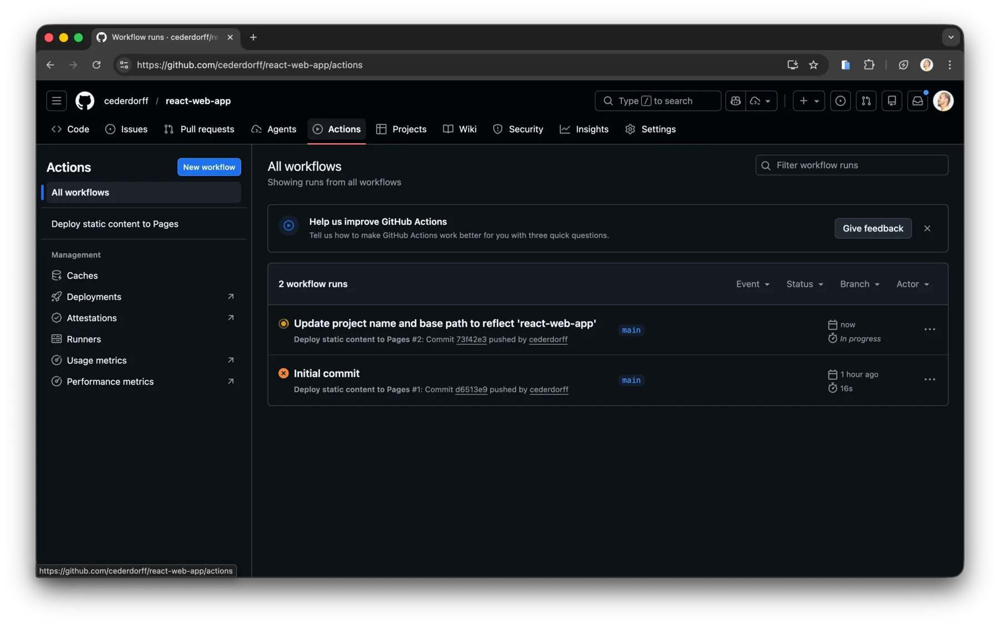
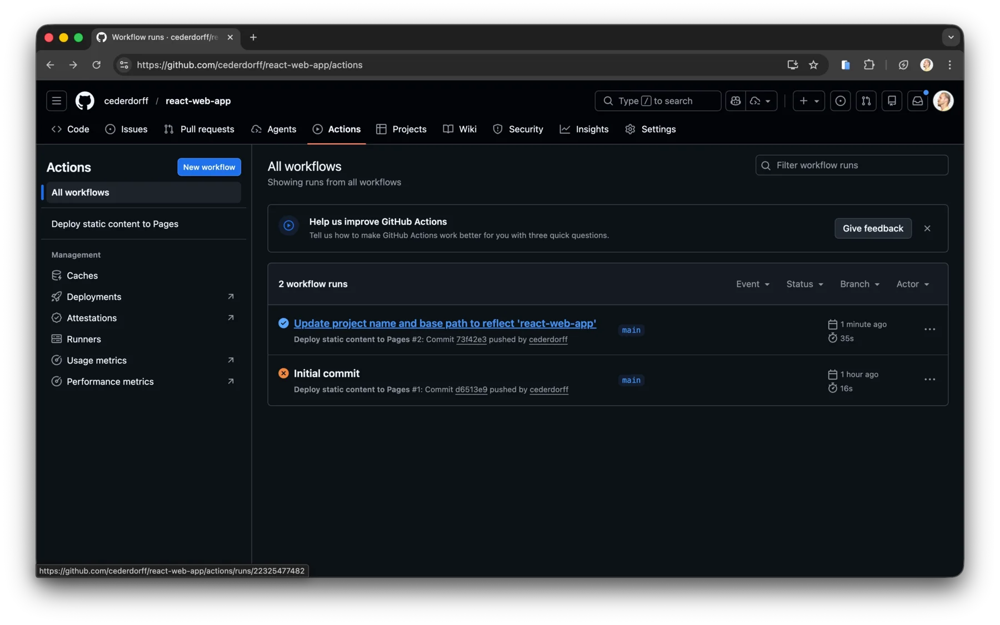
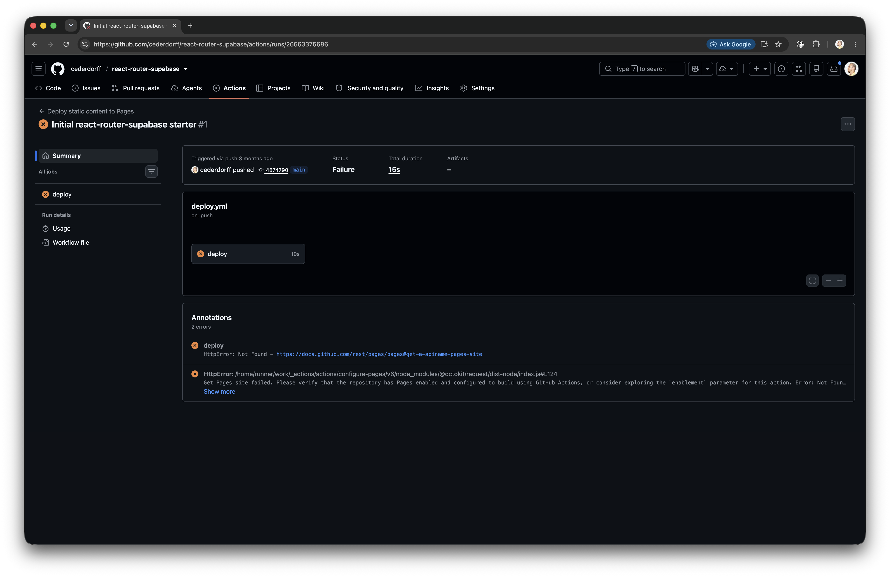
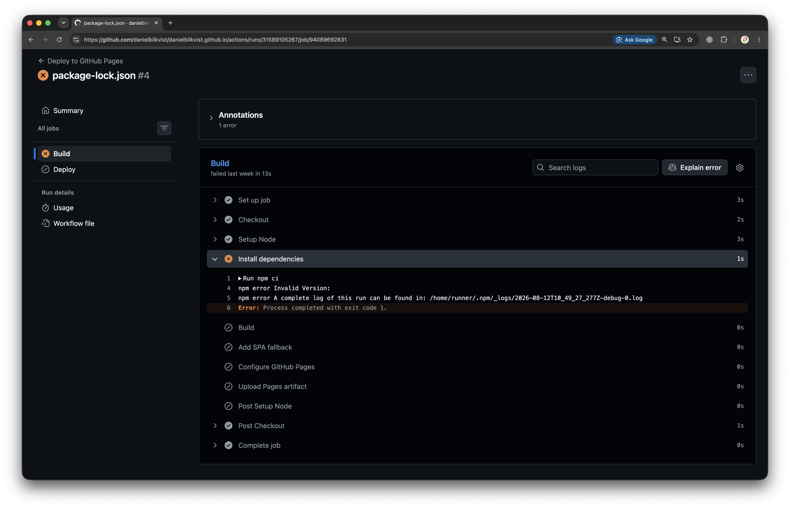
npm ci stopperÅbn det første røde step.
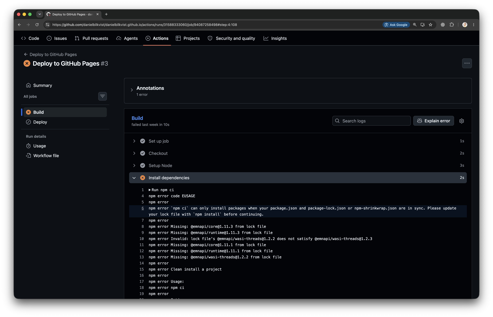
Samme metode hver gang: run → job → første røde step → konkret fejltekst.
Del aldrig værdier fra .env.
Deployment til GitHub Pages fejler, men projektet fungerer lokalt.
Det første fejlede step er: [navn på step]
Her er den konkrete fejl:
[indsæt fejltekst]Forklar den sandsynlige årsag. Vis, hvordan jeg kan reproducere fejlen lokalt, og foreslå den mindste rettelse.
Workflowet installerer projektet og bygger mappen dist.
GitHub gør buildet tilgængeligt på en offentlig URL.
Routes, JavaScript, CSS og billeder findes under repositoryets navn.
404.html starter React-appen ved direkte links og refresh.
Inden første deployment: Sæt base i projektets package.json, og
vælg GitHub Actions som Pages-kilde i repositoryets indstillinger.
http://localhost:5173/posts
https://brugernavn.github.io/web-app-optimization/posts
/web-app-optimization/ er appens base path: den del af adressen, der kommer
før appens egne routes og filer.
/posts
Billedelogo.webp
Buildfilassets/index.js
På Pages skal alle tre findes efter den samme base path.
Pages tilføjer repositoryets navn foran appen.
base retter stier til JavaScript, CSS og importerede billeder.${import.meta.env.BASE_URL}logo.webpbasename={import.meta.env.BASE_URL}
Pages er en filserver og kan ikke selv finde en React-route som /posts.
404.html → React-appen
React Router læser URL’en og viser siden
Base path retter adresserne. Fallback starter appen ved en direkte route.
package.jsonProjektets rodmappe → package.json
{
"base": "/web-app-optimization/"
}Værdien skal matche repositoryets navn — inklusive skråstregerne.
Repository → Settings → Pages
Build and deployment → Source → GitHub Actions
Det kobler Pages til workflowet, der allerede ligger i starteren.
main.
Ved push starter workflowet automatisk.
base i package.json.
GitHub Actions som Source under
Pages.
main./posts.
En forventet Supabase-fejl på /posts er okay nu. En GitHub 404 eller manglende billeder
betyder, at Pages-konfigurationen ikke er færdig.
Workflowet er grønt, og Pages har publiceret et deployment.
Styling, JavaScript og den synlige ændring er indlæst.
Både importerede billeder og filer fra public vises.
/posts åbner efter refresh uden en GitHub 404-side.
Deployment er først kontrolleret, når appen også virker i browseren.
main:
I VS Code: Sæt "base": "/web-app-optimization/" i projektets
package.json.
På GitHub: Vælg Repository → Settings → Pages → Source: GitHub Actions.
Lav en synlig ændring, og kontrollér den med npm run dev.
Kør npm run build, læs diffet, og commit ændringen.
Push dit commit, og kontrollér, at det kan ses i repositoryet på GitHub.
Følg Actions. Test derefter forside, billeder og refresh på /posts.
Hvis run fejler: Find første røde step → læs den konkrete fejl → reproducer lokalt → brug
det næste relevante check. Del aldrig værdier fra .env.
Du er klar, når: Workflowet er grønt, billederne vises, og /posts åbner efter
refresh uden en GitHub 404-side. Der skal ikke afleveres noget.
mainmain
Den fælles, fungerende version
feature/update-home
Dine nye commits lander her
Branchen starter fra et bestemt punkt i main og kan ændres uden at ændre main.
Flere kan udvikle forskellige ændringer samtidig.
Commits og diff handler om én afgrænset opgave.
mainUfærdig kode bliver først fælles efter review og merge.
Branches fjerner ikke konflikter — de giver teamet et kontrolleret sted at opdage og løse dem.
feature/…
main
← foreslå ændringer fra ←
Compare · kildefeature/update-home
Pull requests→New pull request→base + compare→Create pull request
Hvad ændres — og hvorfor?
Er diffet lille og forventet?
Er automatiske kontroller grønne?
Flet først, når ændringen er klar.
I et team reviewer en anden person normalt PR’en. I dag øver du selv kontrolpunkterne.
main.feature/update-home.main og compare:
feature/update-home.
Du er klar, når: PR’en er merged til main, Actions er startet, og ændringen
kan ses på Pages.
Hvis du ikke ser din branch: Kontrollér, at du valgte Publish Branch — ikke push
til main.
Environment variables giver den samme kode forskellige værdier i forskellige miljøer.
VITE_SUPABASE_URL
=
Værdihttps://…/rest/v1/posts
En navngivet konfigurationsværdi, som det aktuelle miljø gør tilgængelig for appen.
import.meta.env.VITE_SUPABASE_URL
.env-filEn lokal tekstfil, som Vite læser, når udviklingsserveren starter.
VITE_SUPABASE_URL=…
.env er filen — environment variables er værdierne.
Et miljø er de omgivelser, appen kører i — fx lokalt under udvikling eller online i produktion.
VITE_SUPABASE_URL=
https://dev-project…/postsKan pege på en database med testdata, som vi trygt kan udvikle imod.
VITE_SUPABASE_URL=
https://prod-project…/postsKan pege på den database, som den færdige webapp skal bruge.
Variabelnavnet og koden er de samme — miljøet bestemmer værdien.
.envVite læser filen, når npm run dev starter.
.env
VITE_SUPABASE_URL=…
VITE_SUPABASE_APIKEY=…
import.meta.env
.VITE_SUPABASE_URL
github-pages-deploymentActions leverer værdierne, når npm run build kører.
vars.VITE_SUPABASE_URL
vars.VITE_SUPABASE_APIKEY
Vi sender ikke .env til GitHub — vi konfigurerer online-miljøet separat.
.env.env.exampleViser hvilke variabelnavne projektet forventer — uden de konkrete værdier.
.envIndeholder dine konkrete værdier og skal ikke stages, committes eller pushes.
.gitignoreIndeholder .env, så Git ikke begynder at tracke filen.
.env må ikke stå i Source Control-listen.
Hvis den vises: Tilføj .env til .gitignore.
github-pages-deploymentgithub-pages-deploymentNavnet matcher environment.name i workflowet.
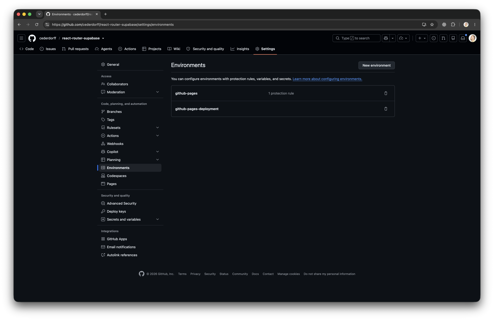
VITE_SUPABASE_URL
VITE_SUPABASE_APIKEY
Environment variables — ikke Environment secrets
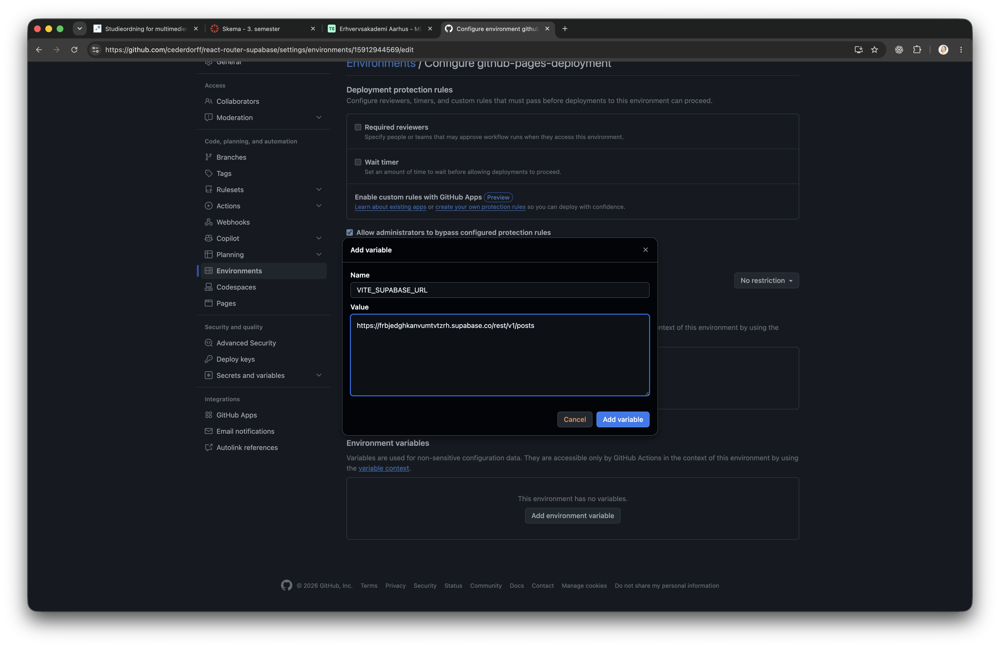
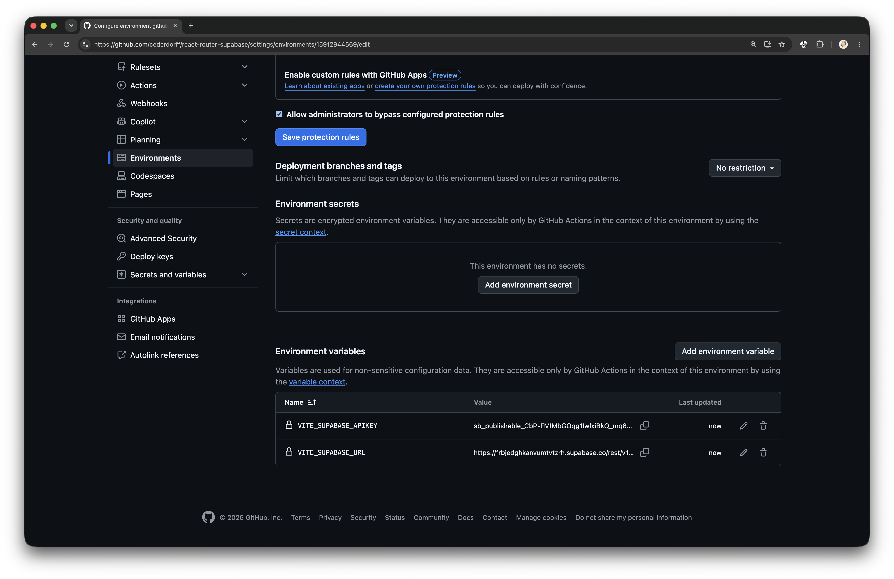
Nye værdier bruges først, næste gang workflowet bygger appen.
Værdien står ikke direkte i komponenten eller repositoryet. Men Vite indsætter VITE_-værdier i
frontendens build.
.env ignoreres, så de konkrete værdier ikke bliver committed eller vist i repositoryet.
En bruger kan finde værdierne i JavaScript-buildet eller i appens netværkskald.
Brug kun Supabase URL og publishable key i frontend — aldrig passwords, private tokens eller service-keys.
.env.example til en ny fil: .env.env vises, så tilføj .env til
.gitignore
Ctrl+C stopper processen → kør npm run dev igen → test
/posts
github-pages-deploymentmain
/posts på Pages
Du er klar, når: De udleverede posts vises både lokalt og på Pages — og .env
stadig ikke står i Source Control.
Start først, når Opgave 4 virker lokalt og online. Skift kun konfigurationen — en genkendelig post er dit bevis.
posts-tabel — eller følg
supabase-setup.md
.envCtrl+C, kør npm run dev igen, og kontrollér /posts
github-pages-deploymentmain
Du er klar, når: Den samme React-kode viser data fra din Supabase lokalt og online — og
.env stadig ikke fremgår af Source Control.
Titel, beskrivelse, favicon, sprog og indhold skal passe til løsningen.
lang="da" giver browseren og hjælpemidler det rigtige sprog.
Tjek dokumenttitel, meta description, favicon/logo og sprog.
Fjern starter-template-rester, og tilpas tekst, billeder og labels til din løsning.
Gennemgå README og guides, og fjern eller omskriv det, der kun hører til templaten.
Du er klar, når: Du har gennemgået alle seks punkter fra forrige slide og kan vise, hvad du har ændret, eller hvorfor punktet allerede var på plads.
På 2. semester arbejdede vi med accessibility i React — lad os få det tilbage!
Brug HTML-elementer og heading-hierarki, der beskriver indholdet.
Brug ARIA, når HTML ikke er nok — ikke som erstatning for semantik.
Labels, linktekst, knapper og fejlbeskeder skal kunne forstås.
Alt kan nås og bruges med tastatur, og fokus er altid synligt.
Billeder har passende alt-tekst, og formularer har labels og feedback.
Opdatér document.title, og flyt fokus til den nye overskrift:
headingRef.current?.focus()
Genbesøg React og Accessibility fra 2. semester. Du behøver ikke læse det hele.
Brug princippet på ét konkret sted i den React-løsning, vi arbejder på i dag.
Du er klar, når: Du har lavet én forbedring og kan forklare, hvilket a11y-princip du har brugt.
De kan nå de samme data, men de giver os forskellige måder at arbejde på.
const response = await fetch(
`${SUPABASE_URL}/rest/v1/posts`,
{
headers: {
apikey: PUBLISHABLE_KEY,
"Content-Type": "application/json"
}
}
);
const posts = await response.json();URL, HTTP-metode, headers og eventuelt en body.
GET læser, POST opretter, PATCH ændrer,
DELETE fjerner.
Statuskode, headers og data — eller en fejl, vi skal håndtere.
Et fælles princip for at arbejde med ressourcer via HTTP.
Du bruger browserens generelle HTTP-værktøj direkte.
const response = await fetch(URL, {
headers: { apikey: key }
});
const data = await response.json();Du bruger Supabases eget bibliotek og dets API.
const { data } = await supabase
.from("posts")
.select("*");REST: En generel måde at udveksle data over HTTP på. Den samme forståelse kan bruges med Supabase, Firebase, AWS eller jeres egen backend. SDK: Et bibliotek lavet til en bestemt platform eller tjeneste, som pakker requests og responses ind i et mere specialiseret JavaScript-sprog.
Biblioteket omsætter JavaScript-kald til requests, headers og responses.
Et SDK kan samle database, auth, realtime, storage eller andre platformstjenester.
Vi skriver mindre gentaget HTTP-kode og arbejder i et sprog, der passer til platformen.
SDK’et fjerner ikke request, response, statuskoder eller fejl — det pakker dem ind.
Pointen: SDK’et pakker det tekniske lag ind — det fjerner det ikke.
Med fetch sendte I requests og modtog responses. I øvede URL, HTTP-metoder, headers, statuskoder og JSON — uanset om backend senere er Supabase, Firebase, AWS eller jeres egen.
REST viste jer hele vejen fra kode til netværk. Et SDK kan gøre arbejdet kortere senere — og det er helt fint at bruge SDK’er på 3. semester.
REST var træningen i fetch, HTTP og JSON. Når I forstår det lag, er det lettere at vælge og bruge et SDK.
Principperne gælder på tværs af værktøjer. Vi ser på en AI-agent i VS Code.
Mere handlekraft kræver mere afgrænsning, review og test.
En AI-agent kan bruge åbne filer og markeret kode som kontekst og vise ændringer som et reviewbart diff.
Undersøg PostsPage.jsx og deployment-workflowet.
Forklar først de vigtigste risici. Ændr ikke noget endnu.
.env. Ændr ikke noget, før jeg har godkendt forslaget..env.
Du er klar, når: Du kan vise en konkret forbedring, forklare hvorfor den var relevant, og dokumentere mindst to måder, du kontrollerede resultatet på.
Gå din egen app igennem og find de områder, hvor dagens emner faktisk gør en forskel: deployment, routing, data, metadata eller accessibility.
Beskriv, hvilke problemer der er mest tydelige eller mest skadelige for brugeren eller appen.
Vælg de forbedringer, du kan løse nu, og lav den mest relevante rettelse. Brug gerne en AI-agent med klare rammer.
Test lokalt og online, og forklar, hvordan du ved, at forbedringen har haft effekt i din app.
Du er klar, når: Du kan vise, hvilke af dagens forbedringer din egen app har brug for, og hvordan du har evalueret dem i praksis.